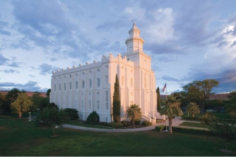

Our Motto
“Making you feel yourself at home”
What is the similarity between Your home, the Temple, and Temple Inn & Suites? You look for these three options to find your physical and spiritual peace. Our mission is to bring an unforgettable experience, where you will rest between your outdoor activities, and give you a relaxing stay when you are not involved with your outdoor activities.
Saint George Utah Temple

History
The St. George Utah Temple is a temple of The Church of Jesus Christ of Latter-day Saints in St. George, Utah. Saint George Utah Temple was announced on November 9, 1871 and dedicated in April 6, 1877 by President Brigham Young, it was the church's third temple completed, but the first in Utah. George Temple was built to satisfy the church's immediate need for an appropriate place for temple ceremonies and ordinances. Read more …
President Young chose a 6-acre plot as the temple site. Builders soon discovered that the chosen site was swampy with numerous underground streams. Young was consulted on moving the site, but he remained firm in the idea that this was the site for the temple. To deal with the swampy site, workers created drains to eliminate as much water as possible. Then they brought lava rock to the site and crushed it into a gravel to create a dry foundation for the temple.
After stabilizing the foundation, work began on the structure. The walls of the temple were built of the red sandstone common to the area and then plastered for a white finish. Local church members worked for over five and a half years to complete the temple.
Some members donated financial resources to help build the temple, while others gave food, clothing and other goods to aid those who were working full-time on the building. Women decorated the hallways with handmade rag carpets and produced fringe for the altars and pulpits from Utah-produced silk.
In honor of the temple, the April 1877 General Conference was held there. After remodeling of the interior, the temple was rededicated on November 11, 1975.